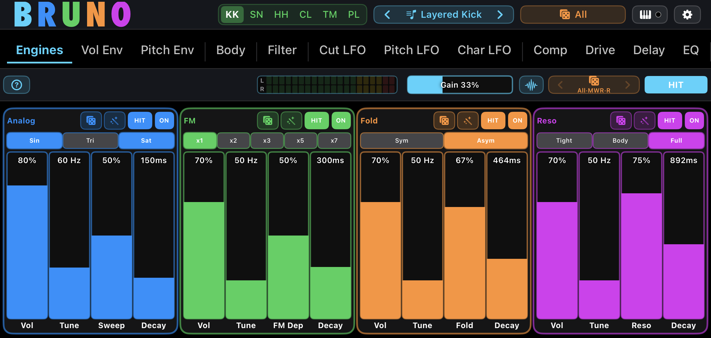
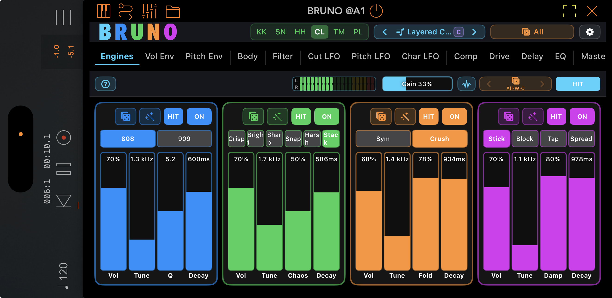
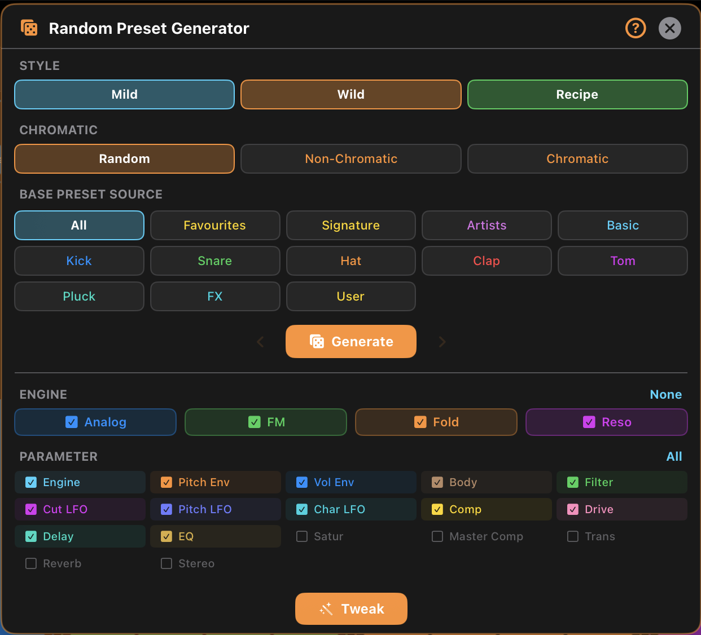

Layered Drum and Pluck Synth. 6 Voice Types. 4 Engines per voice.

Bruno Drum Synth
Layered Drum and Pluck Synth. 6 Voice Types. 4 Engines per voice.
Four independent synthesis engines, layered into a single percussion sound. Always ready to play.
Here's the secret behind every great drum: the professionals build them in layers. A kick is a sub, a click and a body, stacked and balanced. A snare is a tone, a crack and a wash of noise. The traditional way means juggling samples, plugins and routing to pull it off. Bruno makes that professional technique effortless — four full synthesis engines layered inside one instrument.
Bruno asks a different question. Not "which drum machine should we sample?" — but "what does a drum become when each layer is a full synthesizer?"
You load one Bruno per drum. Inside, four engines — Analog, FM, Fold and Resonant — run in parallel and sum together. Use just one focused engine for a clean, punchy sound, or stack all four layers — each with its own filters, envelopes, drive and EQ — when you want more. The layering power is there when you need it, but a single engine is all it takes to make a great drum. Hit the dice. Tweak it. Save it. Or dive deeper when you're ready. Whether it's your first drum sound or your thousandth, Bruno meets you where you are.
Pick a voice — Kick, Snare, Hat, Clap, Tom or Pluck — and all four engines reconfigure for that drum. Then shape each engine as deep as you like.
Pure oscillator synthesis — the deepest sub kicks, vintage snare bodies and classic hat shimmer. The most drum-machine of the four.
Frequency modulation for tight techno kicks, bright snare crack and cymbal-like hats. Inharmonic and aggressive.
Wavefolding that grows harmonics over time — grungy kicks, industrial snares, crunchy hats and lo-fi claps.
Modal synthesis that sounds struck, not synthesised. Rubbery kicks, acoustic-feel snares and bell-like plucks.
Switching voice reconfigures every engine for that drum's range and character — from a sub-shaking kick to a shimmering cymbal to a gamelan pluck. Load one Bruno per part and build the whole kit.
Deep, subby 808-style and 909-style kicks, punchy FM, grungy fold, and rubbery modal — with an integrated techno rumble.
Body plus wires across all four engines. Vintage 909-style snap, metallic FM crack, industrial fold and acoustic-feel shell.
Metallic, inharmonic shimmer with automatic spectral decay, so each cymbal darkens as it rings out — just like the real thing.
A true multi-burst clap engine — 1 to 7 bursts with humanisation, so it sounds like real hands, not a stiff machine.
Pitched percussion with a sustained ring, a 909-style chirp, a sub layer and a decoupled bottom-head tail.
Karplus-Strong and modal synthesis for strings, mallets, bells and gamelan — a melodic voice that's a drum machine's secret weapon.
This isn't a sample with a few knobs. Every one of Bruno's four engines is a full synthesis voice with its own complete signal chain — something you won't find in a sampled drum machine.

Four colour-coded engines, side by side. Each has its own complete signal path — solo one, layer all four, or anything between.


Its own tune, envelopes, filter, drive and EQ.
Add a metallic crack while Analog holds the body.
Push harmonic grit without touching the others.
Layer a struck shell or bell entirely on its own.
A real-time spectrum analyser, with every engine drawn in its own colour.
Professionals don't just stack layers — they place them, giving the sub, the body, the click and the noise each their own room in the spectrum so nothing fights for space. Traditionally that means a separate analyser plugin and a lot of guesswork. Bruno builds it in.
Tap the Scope button and the overlay shows two views at once: a stereo oscilloscope of the final output, and a live Engine Spectrum — a real-time frequency plot of every enabled engine, each drawn as a translucent curve in its own colour across a 20 Hz–20 kHz log axis. Analog blue, FM green, Fold orange, Resonant purple — the same colours the engines wear everywhere else, so you always know which layer you're looking at.

Each engine's frequency content drawn in its own colour, so you can read which layer owns which part of the spectrum at a glance.
When two layers pile up in the same band and fight for space, you see it the moment it happens — no more muddy guesswork.
Peak-hold smoothing keeps a split-second drum transient on screen long enough to actually read where its energy lives.
Spot a clash or a hole, then reach for each engine's own filter and EQ to place every layer exactly where it belongs.
Random and Tweak aren't gimmicks bolted onto a drum machine. They're part of the writing — a workflow only digital can offer, designed to keep you moving from one idea to the next.
Most randomisers create chaos. Bruno creates drums — because it knows a kick lives at 35–80 Hz, a hat at 4–10 kHz, and a clean rumble tail is under a second.
Go from "that's interesting" to "that's the sound" in seconds.

A random generator that produces musical sounds, not chaos — and a tweak system that doesn't just kick off your sound design, it becomes part of the writing itself. — The Amici idea
Discovery as a workflow. Tweaking as a writing tool. Drums that feel alive the moment you touch them.
Every Bruno carries a complete master section, tuned for drums — so your sound is finished, punchy and mix-ready before it leaves the instrument.

Most drum machines hand you a raw sound and leave the polish to you. Bruno finishes the job — saturation, compression, transient shaping, reverb, stereo and limiting, all built in and tuned for percussion.
Your drum leaves the instrument punchy, balanced and mix-ready — no extra plugins required.
The full feature set, at a glance — everything Bruno gives you to build a drum and finish a track.
Bruno starts with the workflow. The sound follows.
Four full synthesis engines per drum. Six voices that span a whole kit. A random generator that produces drums, not noise. A tweak system that's part of the writing, not just a starting point. Workflow designed for digital — and percussion nobody else can give you.
Deep enough for an experienced sound designer. Immediate enough for your very first beat.
Available on the Apple App Store for iPhone, iPad, and Mac.